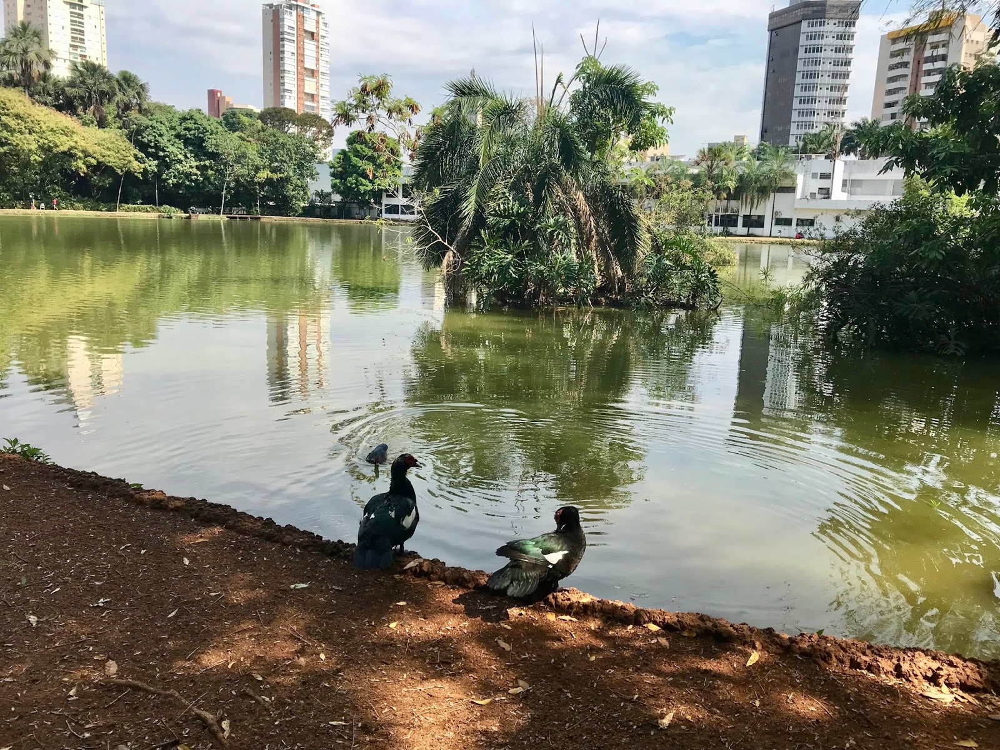
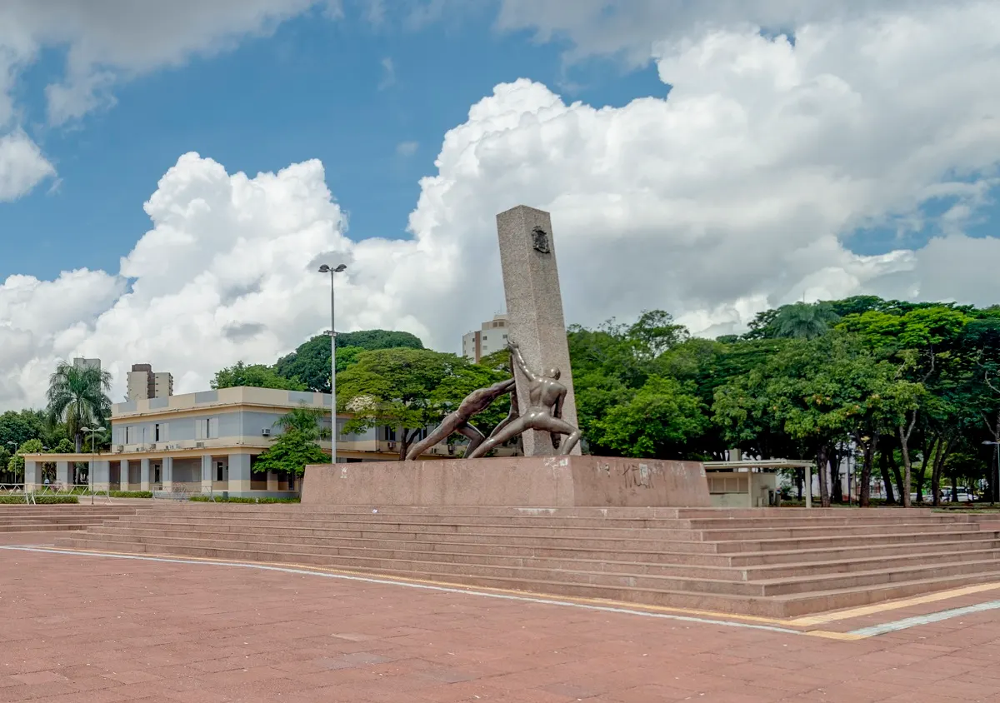

Goiânia

Goiânia, a capital do estado de Goiás, é uma cidade vibrante com uma rica combinação de modernidade e tradições. Conhecida por suas amplas áreas verdes e clima quente, a cidade é um importante destino turístico no Centro-Oeste do Brasil. Goiânia se destaca pela sua arquitetura art déco, sua música sertaneja, e suas festas tradicionais, além de ser um excelente ponto de partida para explorar a cultura e as belezas naturais do estado de Goiás.
A cidade é também um centro econômico importante da região, com várias atrações culturais e gastronômicas que refletem as influências do interior do Brasil. Goiânia tem um charme peculiar, com grandes avenidas arborizadas, praças, mercados e centros culturais que atraem turistas interessados tanto em atividades ao ar livre quanto em vivenciar a cultura local. Além disso, Goiânia é famosa por suas feiras e eventos, como a Feira da Lua e a Expoeagle, que atraem visitantes de todo o país.
Principais pontos turísticos
- Parque Flamboyant
- Bosque dos Buritis 
- Goiânia Park
- Praça Cívica 
- Parque Aquático Três Ilhas
O Parque Flamboyant é um dos maiores parques urbanos de Goiânia, oferecendo um ambiente agradável para atividades ao ar livre, caminhadas, piqueniques e passeios de bicicleta. O parque é conhecido por seu extenso lago e suas áreas verdes bem cuidadas.
O parque é ideal para quem busca contato com a natureza sem sair da cidade, sendo um ótimo local para lazer, relaxamento e para quem gosta de atividades físicas.
O Bosque dos Buritis é uma área de preservação natural no centro de Goiânia, com trilhas, lago, áreas para piqueniques e observação de fauna e flora. O bosque é um excelente local para quem gosta de natureza e tranquilidade, e é considerado um dos pulmões verdes da cidade.
O bosque é um excelente ponto de lazer e turismo ecológico dentro de Goiânia, proporcionando momentos de relaxamento e contato com a natureza em pleno centro urbano.
Para quem procura um parque aquático em Goiânia, o Goiânia Park é uma excelente opção. Ele possui diversas piscinas, toboáguas e uma exuberante área verde ao redor. Durante os dias mais quentes do ano, esse lugar se transforma em um dos mais importantes atrativos da cidade.
A estrutura é completa, com playground, bar e restaurante e até mesmo mesas de sinuca. Assim, é o lugar perfeito para trazer a família em um dia de folga.
A Praça Cívica é o coração de Goiânia, onde se concentram vários edifícios históricos, como o Palácio das Esmeraldas, sede do governo do estado, e a Catedral Metropolitana de Goiânia. A praça é muito movimentada e ideal para quem deseja conhecer a história política e cultural da cidade.
A praça é um ponto turístico histórico e cultural que revela muito sobre o passado de Goiânia e sua evolução como capital do estado de Goiás.
Uma ótima opção de lazer para a família. O clube de lazer Parque Aquátio Três Ilhas fica numa área privilegiada do bairro São Carlos, rodeado pela natureza. O parque conta com restaurantes, piscinas infantil e adulto, castelo pirata e um dragão-escorregador para as crianças, além de 61 piers ao redor do lago para a pesca esportiva.
A avaliação dos clientes em relação ao parque costuma ser positiva. É tido como um lugar agradável, familiar, tranquilo, com boa estrutura e limpeza.
Principais pontos gastronômicos
- Feira da Lua
- Localização: Setor Oeste.
- Mercado Central de Goiânia
- Localização: Setor Central.
- Restaurante Antonieta
- Localização: St. Marista.
- Kanpai Blue
- Localização: Polo Gastronômico do Flamboyant Shopping.
A Feira da Lua é uma feira popular que ocorre aos sábados, oferecendo uma grande variedade de produtos artesanais, roupas, acessórios, além de comidas típicas goianas e de outros estados. Entre as iguarias mais procuradas estão o pequi, a galinhada e o empadão goiano.
A Feira da Lua é um excelente ponto para experimentar a culinária local, comprar artesanato e conhecer a cultura goiana de uma maneira autêntica.
O Mercado Central de Goiânia é o local ideal para experimentar comidas típicas e adquirir produtos regionais, como doces de frutas típicas, queijos artesanais, carnes de sol e especiarias. O mercado também é um ótimo ponto para conhecer o cotidiano da cidade e vivenciar a atmosfera local.
O Mercado Central é um dos centros gastronômicos mais tradicionais da cidade e um excelente lugar para quem deseja experimentar a verdadeira comida goiana.
Se fosse pra resumir o Antonieta Restaurant essa seria a melhor palavra: glamour! A casa foi inspirada na monarquia francesa. A vibe do lugar é maravilhosa com ótima trilha sonora, além de da gastronomia impecável com ênfase na cozinha francesa.
A noite o restaurante se transforma numa baladinha pra curtir à mesa ou em pé. Vale muito conhecer.
A moderna unidade do polo gastronômico, toda trabalhada em aço e ambiente cheio de vidros inspirado em um aquário, reúne o que há de mais novo tanto na arquitetura quanto na gastronomia internacional com ênfase na japanese fusion.
No menu, pratos autorais preparados com ingredientes selecionados dos melhores fornecedores do país e do mundo. Além dos famosos combinados, festivais e saquês, o cardápio também oferece opções para quem não curte o gênero. Pratos quentes como risotos e carnes nobres são ótimas pedidas para harmonizar com a variada adega de vinhos com rótulos nacionais e internacionais.
Principais pontos culturais
- Teatro Goiânia
- Localização: Centro de Goiânia.
- Museu Pedro Ludovico
- Localização: Setor Oeste.
- Palácio das Esmeraldas
- Localização: Praça Cívica.
- Museu de Arte de Goiânia (MAG)
- Localização: Setor Central.
O Teatro Goiânia é um dos principais centros culturais da cidade, com uma programação variada de peças de teatro, shows e concertos. Sua arquitetura, de estilo art déco, é um marco histórico e cultural de Goiânia.
O teatro é uma excelente opção para quem deseja experimentar a cultura local, com apresentações que refletem tanto a produção artística goiana quanto a nacional.
O Museu Pedro Ludovico é dedicado ao primeiro governador de Goiás e abriga um acervo de objetos pessoais, móveis, documentos e fotos antigas. O museu está instalado na antiga residência de Pedro Ludovico Teixeira, um dos fundadores de Goiânia.
O museu é um importante ponto de visitação para quem deseja conhecer a história de Goiás e o papel fundamental de Pedro Ludovico na fundação da cidade.
O Palácio das Esmeraldas é a sede do governo do estado de Goiás e um dos edifícios mais importantes da cidade. Sua arquitetura imponente e sua localização na Praça Cívica tornam-no um dos principais marcos históricos de Goiânia. É possível visitar o local para conhecer um pouco mais sobre a história política do estado.
O palácio é um ponto turístico significativo para quem deseja entender mais sobre o governo estadual e a política local.
O Museu de Arte de Goiânia é um importante centro de arte contemporânea na cidade. O MAG abriga uma grande coleção de arte brasileira, com ênfase em artistas goianos e obras modernas e contemporâneas. O museu também realiza exposições temporárias e eventos culturais.
O museu é fundamental para quem deseja apreciar a arte visual e conhecer a produção artística local e nacional.